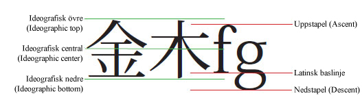

| Paket | flashx.textLayout.formats |
| Klass | public final class LeadingModel |
| Arv | LeadingModel |
| Språkversion: | ActionScript 3.0 |
| Körningsmiljöversioner: | Flash Player 10, AIR 1.5 |
leadingModel i klassen TextLayoutFormat, sammansatt av giltiga kombinationer av baslinjen för radavstånd och radavståndsriktningen. Baslinjen för radavstånd anger vilka baslinjer som anger radavståndet (eller lineHeight) för raderna i ett stycke. Radavståndsriktningen avgör om egenskapen lineHeight hänvisar till avståndet mellan en rads baslinje och baslinjen för föregående eller efterföljande rad.



Relaterade API-element
TextLayoutFormat.lineHeight
flash.text.TextField
flash.text.engine.TextLine
 Dölj ärvda publika egenskaper
Dölj ärvda publika egenskaper Visa ärvda publika egenskaper
Visa ärvda publika egenskaper
| Konstant | Definieras med | ||
|---|---|---|---|
| APPROXIMATE_TEXT_FIELD : String = "approximateTextField" [statisk] Anger en radavståndsmodell som approximerar radavståndsbeteendet för TextField. | LeadingModel | ||
| ASCENT_DESCENT_UP : String = "ascentDescentUp" [statisk] Anger att baslinjen för radavstånd är ASCENT/DESCENT och att riktningen är UP. | LeadingModel | ||
| AUTO : String = "auto" [statisk] Anger att radavståndsmodellen väljs automatiskt baserat på styckets locale-egenskap. | LeadingModel | ||
| BOX : String = "box" [statisk] Anger en radavståndsmodell baserad på den CSS-textbundna formateringsmodellen, vilken innebär kontinuerlig stapling av radrutor. | LeadingModel | ||
| IDEOGRAPHIC_CENTER_DOWN : String = "ideographicCenterDown" [statisk] Anger att baslinjen för radavstånd är IDEOGRAPHIC_CENTER och att riktningen är DOWN. | LeadingModel | ||
| IDEOGRAPHIC_CENTER_UP : String = "ideographicCenterUp" [statisk] Anger att baslinjen för radavstånd är IDEOGRAPHIC_CENTER och att riktningen är UP. | LeadingModel | ||
| IDEOGRAPHIC_TOP_DOWN : String = "ideographicTopDown" [statisk] Anger att baslinjen för radavstånd är IDEOGRAPHIC_TOP och att riktningen är DOWN. | LeadingModel | ||
| IDEOGRAPHIC_TOP_UP : String = "ideographicTopUp" [statisk] Anger att baslinjen för radavstånd är IDEOGRAPHIC_TOP och att riktningen är UP. | LeadingModel | ||
| ROMAN_UP : String = "romanUp" [statisk] Anger att baslinjen för radavstånd är ROMAN och att riktningen är UP. | LeadingModel | ||
APPROXIMATE_TEXT_FIELD | Konstant |
public static const APPROXIMATE_TEXT_FIELD:String = "approximateTextField"| Språkversion: | ActionScript 3.0 |
| Körningsmiljöversioner: | Flash Player 10, AIR 1.5 |
Anger en radavståndsmodell som approximerar radavståndsbeteendet för TextField. Det liknar ASCENT_DESCENT_UP såtillvida att lineHeight hänvisar till avståndet mellan en rads uppstapelbaslinje och föregående rads nedstapelbaslinje. Baslinjepositionerna approximerar de som fastställs av TextField och använder inte den information som finns i TextLine.
ASCENT_DESCENT_UP | Konstant |
public static const ASCENT_DESCENT_UP:String = "ascentDescentUp"| Språkversion: | ActionScript 3.0 |
| Körningsmiljöversioner: | Flash Player 10, AIR 1.5 |
Anger att baslinjen för radavstånd är ASCENT/DESCENT och att riktningen är UP. lineHeight hänvisar alltså till avståndet mellan en rads uppstapelbaslinje och föregående rads nedstapelbaslinje.
AUTO | Konstant |
public static const AUTO:String = "auto"| Språkversion: | ActionScript #IDEOGRAPHIC_TOP_DOWN |
| Körningsmiljöversioner: | Flash Player 10, AIR 1.5 |
Anger att radavståndsmodellen väljs automatiskt baserat på styckets locale-egenskap. För japanska och kinesiska är det IDEOGRAPHIC_TOP_DOWN. För alla andra är det ROMAN_UP.
BOX | Konstant |
public static const BOX:String = "box"| Språkversion: | ActionScript 3.0 |
| Körningsmiljöversioner: | Flash Player 10, AIR 1.5 |
Anger en radavståndsmodell baserad på den CSS-textbundna formateringsmodellen, vilken innebär kontinuerlig stapling av radrutor. En radruta definieras som en begränsningsram runt textbundna rutor för alla leaf-element på textraden, sedan de har justerats med baselineShift, dominantBaseline, alignmentBaseline osv. För ett intervall erhålls den textbundna rutan genom att tillämpa radavstånd lika mycket över som under textinnehållet så att dess höjd blir lika lineHeight. För ett textbundet grafiskt objekt ignoreras lineHeight. Den textbundna rutan härleds från dess angivna mått och utfyllnadsvärden. Dessutom ignoreras firstBaselineOffset med denna radavståndsmodell.
Mer information finns i Box leading model.
IDEOGRAPHIC_CENTER_DOWN | Konstant |
public static const IDEOGRAPHIC_CENTER_DOWN:String = "ideographicCenterDown"| Språkversion: | ActionScript 3.0 |
| Körningsmiljöversioner: | Flash Player 10, AIR 1.5 |
Anger att baslinjen för radavstånd är IDEOGRAPHIC_CENTER och att riktningen är DOWN. lineHeight hänvisar alltså till avståndet mellan en rads ideografiska mittbaslinje och nästa rads ideografiska mittbaslinje.
IDEOGRAPHIC_CENTER_UP | Konstant |
public static const IDEOGRAPHIC_CENTER_UP:String = "ideographicCenterUp"| Språkversion: | ActionScript 3.0 |
| Körningsmiljöversioner: | Flash Player 10, AIR 1.5 |
Anger att baslinjen för radavstånd är IDEOGRAPHIC_CENTER och att riktningen är UP. lineHeight hänvisar alltså till avståndet mellan en rads ideografiska mittbaslinje och föregående rads ideografiska mittbaslinje.
IDEOGRAPHIC_TOP_DOWN | Konstant |
public static const IDEOGRAPHIC_TOP_DOWN:String = "ideographicTopDown"| Språkversion: | ActionScript 3.0 |
| Körningsmiljöversioner: | Flash Player 10, AIR 1.5 |
Anger att baslinjen för radavstånd är IDEOGRAPHIC_TOP och att riktningen är DOWN. lineHeight hänvisar alltså till avståndet mellan en rads ideografiska toppbaslinje och nästa rads ideografiska toppbaslinje.
IDEOGRAPHIC_TOP_UP | Konstant |
public static const IDEOGRAPHIC_TOP_UP:String = "ideographicTopUp"| Språkversion: | ActionScript 3.0 |
| Körningsmiljöversioner: | Flash Player 10, AIR 1.5 |
Anger att baslinjen för radavstånd är IDEOGRAPHIC_TOP och att riktningen är UP. lineHeight hänvisar alltså till avståndet mellan en rads ideografiska toppbaslinje och föregående rads ideografiska toppbaslinje.
ROMAN_UP | Konstant |
public static const ROMAN_UP:String = "romanUp"| Språkversion: | ActionScript 3.0 |
| Körningsmiljöversioner: | Flash Player 10, AIR 1.5 |
Anger att baslinjen för radavstånd är ROMAN och att riktningen är UP. lineHeight hänvisar alltså till avståndet mellan en rads latinska baslinje och föregående rads latinska baslinje.
Tue Jun 12 2018, 01:40 PM Z